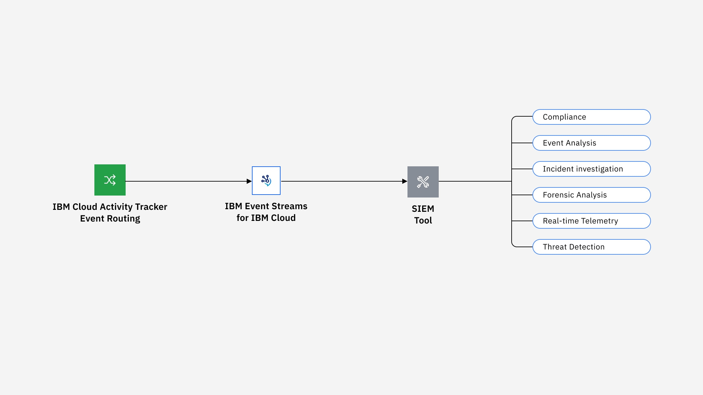
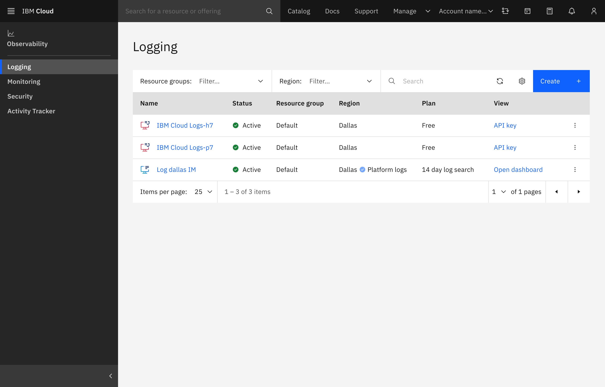
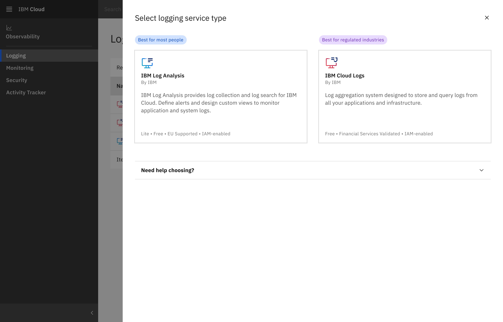
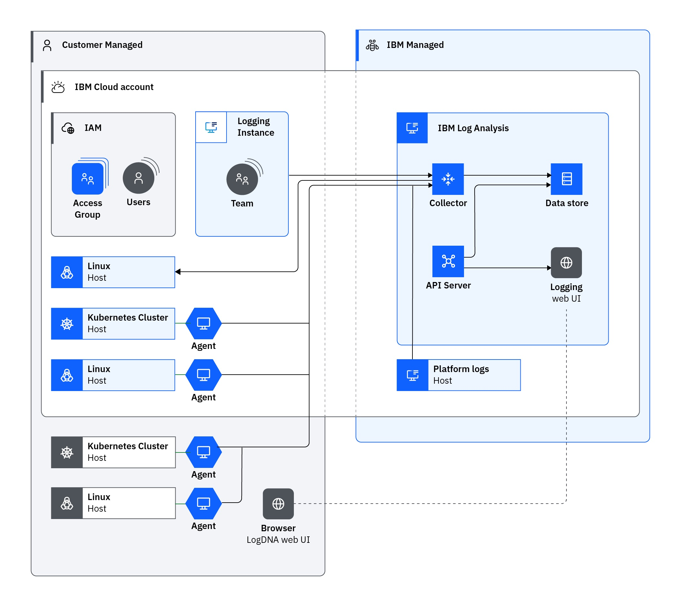
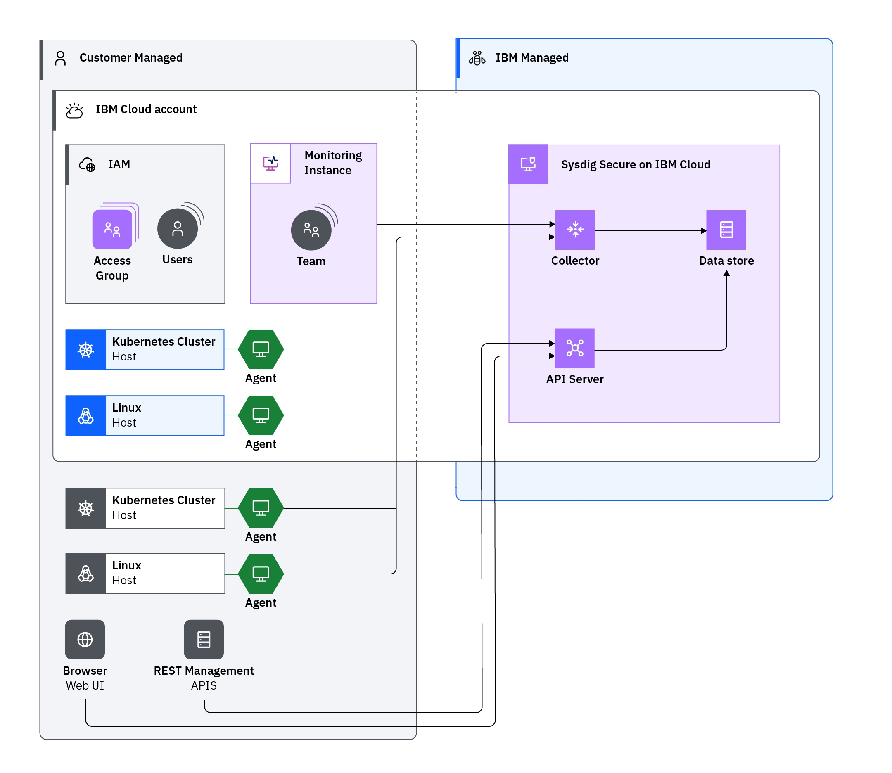
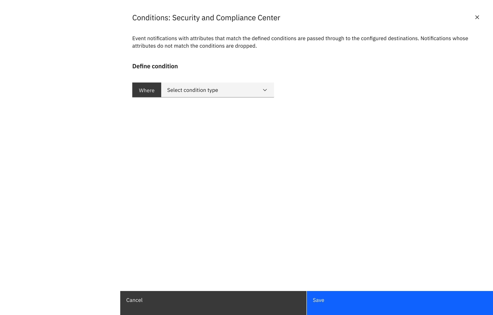
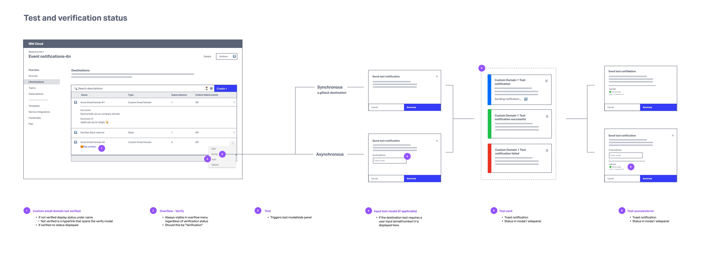

Product Design
IBM Cloud Observability
Three years designing inside a complex enterprise platform. Logging, monitoring, activity tracking, traces, and related observability services. The work was less about single projects and more about helping fragmented tools feel more cohesive, more IBM-native, and easier to understand.
IBM Cloud Observability was where I learned how to design inside a complex enterprise platform.
2021 – 2024 · Observability squad

Designing through complexity
The work spanned logging, monitoring, activity tracking, traces, and related observability services that helped users across various technical roles understand what was happening across their cloud environments. These products supported log management, infrastructure and application monitoring, audit event routing, trace viewing, alerting, configuration, and incident investigation.
The challenge was that the ecosystem was not clean or simple. Many experiences were shaped by partner products, third-party tooling, legacy patterns, unclear routing models, limited development resources, and platform requirements that all had to fit within IBM Cloud. My role was to help make those fragmented tools feel more cohesive, more IBM-native, and easier to understand.
Across three years, I contributed to routing concepts, partner product integrations, D&UX reviews, end-to-end flow redesigns, and illustration systems used across IBM Cloud. More than any single project, this work taught me how to translate messy technical systems into usable, shippable product experiences.
01 · Learning the system while contributingRouting audit events at scale
Activity Tracker was my entry point into Observability and professional enterprise design.
I joined IBM in early 2021 with a steep learning curve: a complex cloud domain, an unfamiliar design system, and a team still finding its footing. When our design lead left mid-year, I stepped into an interim co-lead role while still ramping up. That meant organizing the design repo, attending lead meetings, running cross-functional syncs, and learning how to ask better questions in a domain where the answers were rarely simple.
The routing work started as self-directed exploration. I created low-fidelity concepts for how operators could configure where audit events were sent, then co-hosted a Mini Design Jam to gather ideas from the broader team. Those early concepts fed into internal workshops and helped shape the platform-level direction for routing.
It was a first lesson in designing through ambiguity: learning the system quickly, contributing before I had all the answers, and using rough concepts to move technical conversations forward.

Integrating Cloud Logs into IBM Cloud
Cloud Logs became the largest design systems effort of my time on the squad.
IBM was integrating a partner observability product into IBM Cloud. The goal was not only to update the interface visually, but to make the experience feel native to the platform: aligned with Carbon, consistent with IBM Cloud patterns, and understandable to users moving through the broader Observability ecosystem.
I led UI design across the Preview, Experimental, and Beta release schedule. That meant reviewing screens in detail, flagging inconsistencies, translating Carbon and Carbon for Cloud guidance, and producing implementation-ready deliverables at a level of detail the team had not used in previous integration efforts.
I also created technical diagrams for the documentation library and assets used during IBM TechXchange live labs. That year, Observability became the second-largest revenue-generating product space within IBM Cloud Infrastructure, and this work was part of the broader push to make those products feel more cohesive and platform-native.
This project taught me how much design systems work happens in the details. Not just applying components, but helping another product inherit the expectations, behaviors, and quality bar of a larger platform.




Monitoring, Logging & Security reviews
D&UX reviews gave me a broader view of Observability as a portfolio.
Across Monitoring, Logging, and Security, I reviewed dense enterprise interfaces for interaction, visual, and usability issues. Running this work as an early-career designer taught me how to separate signal from noise, present findings credibly to senior stakeholders, and build enough trust with development teams for issues to move beyond documentation and into resolution.
For Sysdig Secure, our team conducted nine user interviews and synthesized findings into actionable product recommendations. Roughly half of the cataloged issues were resolved before launch, and many improvements applied across multiple Observability services.
This work helped me understand quality at the portfolio level: how small issues compound across complex products, and how design critique becomes more useful when it is specific, prioritized, and tied to implementation.


Collapsing setup into a faster flow
Event Notifications was the first project I owned end-to-end.
The existing creation flow required users to complete multiple setup steps before they could begin the actual task. I organized co-design workshops to rethink the experience, and we consolidated the process into a single fast-track flow.
One of the trickiest parts was the conditions builder: a rule-building interaction similar to email filters, but flexible enough to support more complex logic. Designing that experience taught me a lot about progressive disclosure, information hierarchy, and how much complexity to reveal at each step.
I produced a high-fidelity prototype, prepared and moderated user testing sessions, synthesized findings, and presented recommendations to stakeholders. The work also contributed to a reusable connected-experiences pattern in Carbon for Cloud.
This was where I learned to carry a problem from ambiguity to evidence: framing the workflow, designing the prototype, testing the experience, and turning the findings into something the team could build from.


Illustration system for IBM Cloud
Not every part of Observability was about configuration and dense workflows.
Some of the work was about making IBM Cloud feel more intentional. I started with world-page illustrations for Observability and later co-led a cross-team illustration workgroup with Developer Services. We built guidelines, ran design jams, and presented the process to the Cloud PAL Design Guild.
By 2022, I was deconstructing the illustration system into a reusable Figma kit. The kit helped designers build complex assets faster while staying aligned with the style guidelines. That work eventually fed into the broader Cloud PAL 2.0 system used across IBM Cloud.
This work let me bring visual craft into a dense enterprise environment: creating a system that helped products feel more cohesive, expressive, and easier to build for.


What IBM Cloud taught me
IBM Cloud Observability gave me three years of enterprise reps: shipping under design system constraints, working with partner products, reviewing complex interfaces, leading end-to-end research and design, and helping fragmented tools feel more connected.
The biggest lesson was that enterprise UX is rarely about designing from a blank slate. It is about working through constraints, understanding technical systems, collaborating across teams, and still finding ways to make the experience clearer for the people using it.
This work shaped how I approach design now: practical, systems-minded, collaborative, and comfortable in complexity.